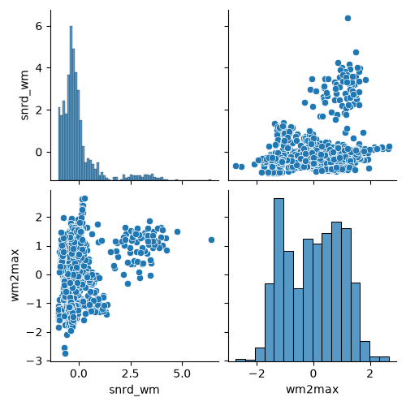
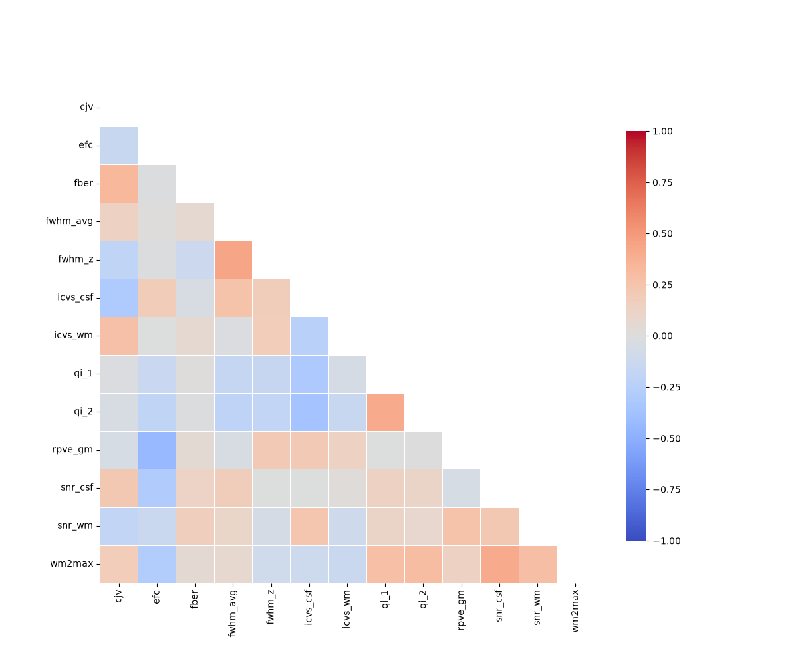

Note
Go to the end to download the full example code.
Interpretability of the image quality metrics¶
Tutorial.
MRIQC provides a comprehensive framework for assessing the quality of MR images in research studies. Alongside its visual reports, it generates a large collection of Image Quality Metrics (IQMs) that quantify different aspects of image integrity. While this breadth of information is valuable, the sheer number of available metrics can make it challenging for researchers to determine which IQMs are most informative when judging the quality of a specific image. Clear guidance on which metrics to prioritize can help streamline quality assessment and support more consistent decision‑making across studies.
Data¶
The T1w IQMs used in this analysis were downloaded from the MRIQC Quality Control REST API:
https://mriqc.nimh.nih.gov/api/v1/T1w
This endpoint provides community‑contributed Image Quality Metrics (IQMs) for T1‑weighted structural MRI scans, enabling comparisons against large normative datasets.
import brainprep
import numpy as np
import pandas as pd
from pathlib import Path
resource_dir = Path(brainprep.__file__).parent / "resources"
data_df = pd.read_csv(resource_dir / "iqm_T1w.csv")
columns = [
name
for name in data_df.columns
if not name.startswith(("provenance.", "bids_meta.", "size_", "spacing_",
"summary_", "tpm_"))
]
data_df = data_df[sorted(columns)]
iqms = data_df.drop([
"_created",
"_etag",
"_id",
"_links.self.href",
"_links.self.title",
"_updated"
], axis=1)
print(iqms)
cjv cnr efc ... snrd_total snrd_wm wm2max
0 0.723938 1.858954 0.564140 ... 34.839946 48.247816 0.547152
1 0.852123 1.508577 0.738258 ... 7.894523 10.766795 0.418142
2 0.560600 2.448116 0.563207 ... 43.914040 62.502591 0.706322
3 0.793762 1.694586 0.572623 ... 30.201655 41.838399 0.652624
4 0.760221 1.715271 0.674800 ... 10.116118 13.589410 0.387541
.. ... ... ... ... ... ... ...
995 0.516082 2.383230 0.614017 ... 14.102988 20.393643 0.665563
996 0.482430 2.603823 0.616080 ... 18.119880 24.867607 0.657314
997 0.733260 1.699137 0.674015 ... 10.904249 15.278017 0.588805
998 0.393971 3.029418 0.583193 ... 19.960742 29.703942 0.675711
999 0.699660 1.854568 0.648808 ... 12.753427 18.473011 0.614847
[1000 rows x 27 columns]
Data scaling¶
Normalizing the IQMs is essential because the metrics span very different numerical ranges, and many downstream analyses assume comparable scales. Bringing all features onto a similar magnitude improves numerical stability and prevents any single metric from dominating purely due to its units.
from sklearn.preprocessing import StandardScaler
scaler = StandardScaler()
iqms_scaled = scaler.fit_transform(iqms)
iqms_scaled = pd.DataFrame(
iqms_scaled,
columns=iqms.columns,
index=iqms.index
)
Visualizing the IQMs¶
To gain an initial sense of how the IQMs relate to one another, we visualize their pairwise scatterplots. Because MRIQC provides a large number of IQMs, we display only a selected subset here.
import matplotlib.pyplot as plt
import seaborn as sns
sns.pairplot(iqms_scaled[iqms_scaled.columns[-2:]])

<seaborn.axisgrid.PairGrid object at 0x7f63e2efb1a0>
Interesting patterns emerge in the scatterplots: several IQMs show clear non‑linear relationships, which is important to keep in mind if linear dimensionality‑reduction methods struggle to capture the structure of the data. At the same time, many metrics are strongly correlated, underscoring how much redundancy exists within the full set of IQMs.
Feature selection¶
The redundancy among the IQMs makes the dataset especially suitable for feature selection, because many metrics capture overlapping aspects of image quality and therefore contribute similar information. Reducing the feature space helps isolate the dominant sources of variation and yields a more interpretable, lower‑dimensional representation of the data.
def greedy_uncorrelated(df, threshold=0.8):
"""
Select a subset of approximately uncorrelated features from a DataFrame.
This function iterates through the columns of the input DataFrame and
greedily builds a set of features whose pairwise absolute correlations
remain below a specified threshold. The first column is always selected,
and each subsequent column is included only if it is sufficiently
uncorrelated with all previously selected features.
Parameters
----------
df : pandas.DataFrame
Input DataFrame containing the features to evaluate.
threshold : float
Maximum allowed absolute correlation between any pair of selected
features. Columns with correlations above this value are excluded.
Default is 0.8.
Returns
-------
selected : list of str
List of column names corresponding to the selected uncorrelated
features.
Notes
-----
This is a greedy algorithm: the order of columns in `df` affects the
resulting selection.
"""
corr_df = df.corr().abs()
selected = []
for col in corr_df.columns:
if all(corr_df.loc[col, sel_col] < threshold for sel_col in selected):
selected.append(col)
return selected
uncorrelated = greedy_uncorrelated(iqms_scaled, threshold=0.45)
iqms_reduced = iqms_scaled[uncorrelated]
print(iqms_reduced)
cjv efc fber ... snr_csf snr_wm wm2max
0 0.859305 -0.859378 -0.208017 ... 1.084366 -1.689138 -0.268178
1 1.408547 1.400283 -0.236468 ... -0.603625 -1.747567 -1.338395
2 0.159444 -0.871493 -0.182213 ... 0.967272 -0.996662 1.052236
3 1.158483 -0.749286 -0.206666 ... 1.168959 -1.449945 0.606781
4 1.014771 0.576744 -0.234822 ... -1.767910 -1.531095 -1.592249
.. ... ... ... ... ... ... ...
995 -0.031305 -0.212088 -0.232681 ... -0.190341 -0.301485 0.714118
996 -0.175496 -0.185320 -0.231823 ... 0.723075 0.454689 0.645686
997 0.899248 0.566551 -0.235682 ... 0.178430 -1.332240 0.077362
998 -0.554522 -0.612112 -0.229016 ... 0.001251 0.713668 0.798304
999 0.755283 0.239425 -0.234451 ... -0.157003 -1.112779 0.293392
[1000 rows x 13 columns]
The metrics should not be too strongly correlated.
plt.figure(figsize=(12, 10))
corr = iqms_reduced.corr()
sns.heatmap(
corr,
mask=np.triu(np.ones_like(corr, dtype=bool), k=0),
cmap="coolwarm",
vmin=-1, vmax=1,
square=True,
linewidths=0.5,
cbar_kws={"shrink": 0.8}
)

<Axes: >
Total running time of the script: (0 minutes 1.334 seconds)
Estimated memory usage: 127 MB